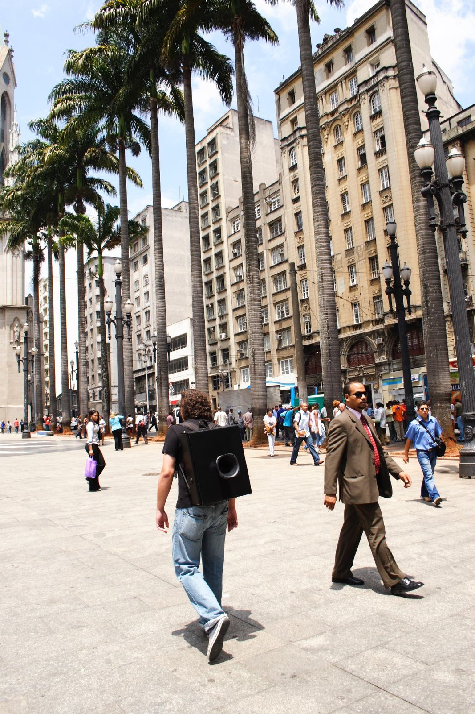

Falante
Registro sonoro em preparação.



Com um alto-falante adaptado numa mochila, o artista atravessa mercados e praças, somando-se aos camelôs e às pechinchas de quiosque. A voz amplificada repete: não preste atenção.
Quem se vira para olhar já desobedeceu. Entre o indivíduo e a multidão, a caminhada encena a dificuldade de passar despercebido.
- Materiais
- Mochila com alto-falante, poema sonoro “Não preste atenção”
- Local
- São Paulo e Fortaleza
- Coleção
- Museu de Artes Visuais de Santiago do Chile